Oracle 3 - tuning
Wednesday, 18 April 2018
3:27 PM
Introduction
- SQL 튜닝 목차
- 8 types of index access
Index range scan
Unique index scan
Index skip scan
- Index skip scan 효과를 보기위한 조건
Index full scan
Index fast full scan
Index merge scan
Index bitmap merge scan
Index join
Sum up
"쿼리의 검색속도를 높이기 위해서 반드시 알아야 하는 기술" 데이터 분석사 --> SQL
SQL 튜너 <--- 직업 SQL
|
3배차이
|
SQL 튜너 (월 1200만원부터 시작 ~ 2400만원 3.3%)
SQL 튜닝 목차
i. 인덱스 튜닝
ii. 조인 문장 튜닝
iii. 서브쿼리 문장 튜닝
Index range scan
Index unique scan
Index skip scan
Index full scan
Index fast full scan
Index merge scan
Index bitmap merge scan
Index join
인덱스를 부분검색하는 스캔 방법
Select ename, sal From emp
Where job='SAELSMAN';
Pb 1. 직업에 인덱스를 생성하고 직업의 인덱스의 구조가 어떻게 생겼는지 조회하시오!
CREATE INDEX emp_job ON EMP(job);
SELECT job,ROWID FROM EMP WHERE job > ' ';
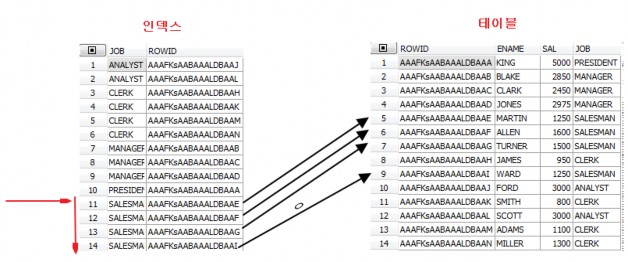
Pb 2. 사원이름에 인덱스를 걸고 아래의 SQL이 어느컬럼에 인덱스를 사용하는지
확인하세요.
SET autot traceonly EXPLAIN;
// 실행계획만 보겠다
SELECT ename,sal,job
FROM EMP
WHERE job='ANALYST' AND ename='ALLEN';
// 인덱스 빠른 쪽으로 엑세스함 (나는 아무것도 안탐)
Pb 3. 문제 2번에서 만약 emp_ename 인덱스를 엑세스 하지 않고 emp_job 인덱스를 했을때
인덱스 검색 범위가 더 작은 emp_ename 인덱스를 타게 하려면 어떻게 해야하나?
Pb 4. 81년도에 입사했고 월급이 3000인 사원의 이름, 입사일, 월급을 출력하는데 월급과 입사일에 인덱스를 걸어서 쿼리를 작성하시오
SELECT hiredate,sal FROM EMP
WHERE hiredate BETWEEN TO_DATE('1981/01/01','RRRR/MM/DD') AND
TO_DATE('1981/12/31','RRRR/MM/DD') AND sal=3000;
Pb 5. 4번문제에서 월급의 인덱스를 엑세스 하지 못하고 입사일의 인덱스를 엑세스 했다면 월급의 인덱스를 엑세스를 할 수 있도록 힌트를 주시오.
SELECT /*+ index(emp emp_sal)*/ hiredate, sal FROM EMP
WHERE hiredate BETWEEN TO_DATE('1981/01/01','RRRR/MM/DD') AND
TO_DATE('1981/12/31','RRRR/MM/DD') AND sal=3000;
Pb 6. 부서 번호와 커미션에 각각 인덱스를 생성하고 부서번호가 30번이고 커미션이 300인 사원의 이름, 월급, 커미션, 부서번호를 출력 하시오
SELECT ename,sal,comm FROM EMP
WHERE deptno=30 AND COMM=300;
Set autot on
// 이렇게 하면 항상 같이 나옴
ALTER TABLE EMP
ADD CONSTRAINT emp_empno_pk PRIMARY KEY(empno); Pb 7. 사원 테이블에 걸린 인덱스 리스트를 조회 하시오
SELECT uniqueness,index_name FROM user_indexes
WHERE table_name='EMP';
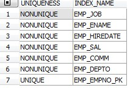
Pb 8. 사원번호에 empno에 인덱스의 구조를 확인 하시오.
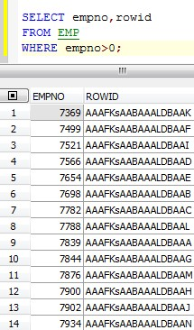
Pb 9. 사원번호가 7654인 사원의 사원 번호와 이름을 조회하는데 인덱스를 통해서 조회될 수 있도록 힌트를 주시오.
SELECT /*+ index_desc(emp emp_empno) */ empno,rowid FROM EMP
WHERE empno=7654;
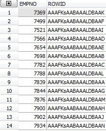
Pb 10. 9번 문제의 SQL이 실행될 때의 인덱스 엑세스와 테이블 엑세스를 그림으로
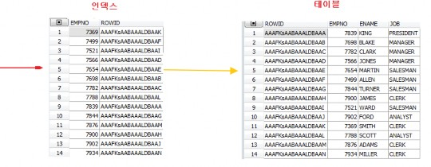
그리시오.
하나만 access 해서 빠르다
Pb 11. 사원 번호가 7654 이고 이름이 MARTIN인 사원의 사원 번호, 이름, 월급을 조회하고 사원 번호의 인덱스를 엑세스 했는지
사원 이름의 인덱스를 엑세스 했는지 확인 하시오.
SELECT empno,ename,sal FROM EMP
WHERE empno=7654 AND ename='MARTIN';
// unique 인덱스를 먼저탄다
Primary key 제약이 걸렸다는것은 이미 데이터가 유니크 하다는게 보장이 된 상태라는 것이다.
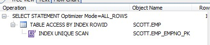
Pb 12. 문제 11번의 인덱스를 ename에 걸린 인덱스를 엑세스 하도록 힌트를 주고 실행하시오
SELECT /*+ index_desc(emp emp_ename)*/ empno,ename,sal FROM EMP
WHERE empno=7654 AND ename='MARTIN';
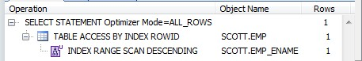
Pb 13. 위에꺼 그림
// unique scan 과 다르게 하나더 스캔한다
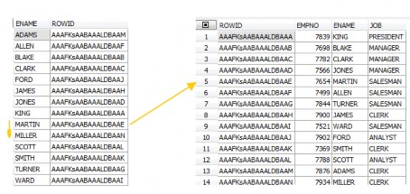
Pb 14. 직업이 SALESMAN 인 사원들의 이름과 월급과 직업을 출력하는 쿼리의
실행계획 그림을 인덱스와 테이블로 나눠서 그리시오
SELECT /*+ index_desc(emp emp_job) */ename,sal,job FROM EMP
WHERE job='SALESMAN';
(주의사항! Index range scan 그림이어야함)
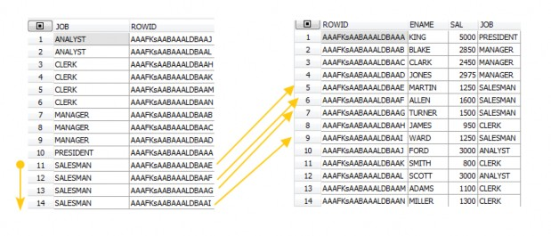
결합 인덱스에 두번째 칼럼에 인덱스를 쓰는방법이다. 첫번째 칼럼의 distinct 개수가 적을때 성능을 향상시킬수 있는 방법이다.
Index skip scan 을 이해하려면 결합 컬럼 인덱스에 대해서 이해가 먼저 되어야 한다. Pb 14. Demobld.sql 수행후 결합컬럼 인덱스 생성
Pb 15. 방금만든 emp_deptno_sal의 인덱스의 구조가 어떻게 되었는지 확인하시오
SELECT deptno,sal,rowid FROM EMP
WHERE deptno>0;
Pb 16. 부서번호가 20번인 사원들의 이름과 월급과 부서번호를 출력하는데 emp_deptno_Sal 인덱스를 엑세스 할 수 있도록 힌트를 주시오
SELECT /*+ index_desc(emp emp_deptno_sal) */ ename,sal,deptno FROM EMP
WHERE deptno=20;
Pb 17. 월급이 3000인 사원의 이름, 월급을 출력하는데 실행 계획에
emp_deptno_sal인덱스를 엑세스 하는지 확인해보시오.
SELECT ename,sal FROM EMP WHERE sal=3000;
왜 인덱스 emp_deptno_sal 인덱스를 엑세스 하지 못하고 full table scan 을 하는가?
결함컬럼 인덱스의 첫번째 컬럼이 where 절에 검색조건으로 존재해야 그 인덱스를 엑세스 할수 있다.
이런 경우에 emp_deptno_sal 인덱스를 엑세스 하게 하려면 index skip scan을 사용해야 한다.
두번째 index 칼럼에서 인덱스 사용한다.
//두번째 칼럼에만 인덱스 적용
SELECT /*+index_ss(emp emp_deptno_sal)*/ ename,sal FROM EMP
WHERE sal=1100;
인덱스 스킵 스캔의 효과를 보기위한 조건
Pb 18. 직업 + 월급으로 결합 컬럼 인덱스를 생성하고 아래의 SQL이 index skip scan 할 수 있도록 힌트를 주시오.
Select ename, sal, job, hiredate From emp
Where sal=1250;
CREATE INDEX emp_job_sal ON EMP(job,sal);
SELECT /*+ index_ss(emp emp_job_sal) */ job,sal FROM EMP
WHERE sal=1250;
Index skip scan 효과를 보기위한 조건
결합 컬럼 인덱스의 첫번째 컬럼의 데이터의 종류가 몇가지 안되어야 효과를 볼 수 있다.
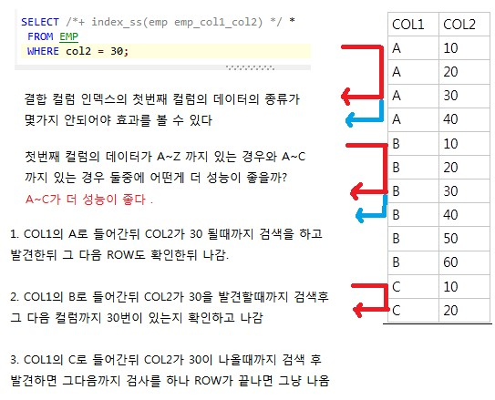
COL1 의 A~C가 더 성능이 좋은 이유는 A~Z면은 들어갔다가 나왔다 하는 숫자 가 많아져서 느려지기 때문이다.
같은 ROW수의 A~Z가 COL1에 있다고 한다면 접근 횟수가 그만큼 늘어나기 때 문에 느려진다.
Pb 21. 사원테이블의 사원번호에 인덱스를 생성하고 사원의 인원수가 몇명인지 카운트 하시오
Index leaf block 전체를 순차적으로 access 하는 operation.
일반적으로 index full scan operation 이 발생을 하게 되면 SQL성능은 떨어지게 된다
!!Stopkey 활용 중요
SELECT * FROM (
SELECT /*+ index_desc(emp000 emp000_sal)*/ ename,sal,dense_RANK()OVER (ORDER BY sal desc) AS 순위
FROM EMP000 WHERE sal>0
)
WHERE 순위=1;
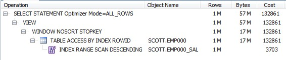
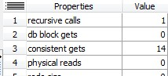
Stopkey 를 쓰도록 유도하면 인덱스에서 정렬을하고 위에것만 불러와서 대단히 빠를수있다.
Pb 20. 사원 테이블의 인원수가 몇명인지 카운트 하시오
SELECT COUNT(empno) FROM EMP; SELECT COUNT(*) FROM EMP; SELECT COUNT(1) FROM EMP;
// three have equal performance (just automatically replaced with the first one)
Pb 21. 인덱스 걸고 스캔하시오
ALTER table EMP
ADD CONSTRAINT emp_empno_pk PRIMARY KEY(empno);
SELECT COUNT(*) FROM EMP;
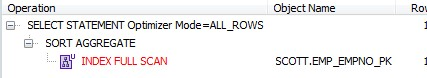
Index full scan 이 table full scan 보다 성능이 좋다
Pb 22. 문제 21번을 다시 수행하는데 테이블 full scan 으로 수행되게 하시오
Select /*+ full(emp) */ count(empno) From emp;
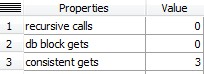
Pb 23. 다시 index full scan 힌트를 주고 실행한후에 몇개의 블럭을 읽었는지 확인하시오
Select /*+ index full(emp) */ count(empno) From emp;
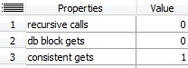
인덱스 full 스캔보다 더 성능이 좋은 스캔 -> 병렬처리 | |||
Index fast full scan은 full table scan 과 마찬가지로 multi block I/O 를 한다. Multi block | |||
I/O 하기 때문에 데이터 | 출력 순서를 전혀 보장하지 않는다. | ||
Index full scan은 Index 컬럼만 SQL에 포함되어 있을떄 | 발생할수있다. | ||
--> 데이터 스캔 범위가 넓으면서 인덱스가 포함되있는 컬럼만 엑세스할때 유용하게 | |||
쓰일수 있다. | |||
Pb 24.
Select /*+ index_ffs(emp emp_empno_pk) */ count(empno) From emp;
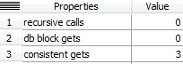
Pb 25. 직업, 직업별 인원수를 출력하는데 ffs 인덱스를 이용해서 수행.
CREATE INDEX emp_job_empno ON EMP(job,empno);
SELECT /*+ index_ffs(emp emp_job_empno)*/ job, COUNT(*) FROM EMP
GROUP BY job;
ALTER TABLE EMP MODIFY job NOT NULL;
Pb 26. 부서번호와 부서번호별 인원수를 출력하는데 가장 빠르게 출력될 수 있도록 적절한 인덱스를 생성하고 힌트를 주고 수행.
CREATE INDEX emp_deptno_empno ON EMP(deptno,empno);
SELECT /*+ index_ffs(emp emp_deptno_empno) */ deptno,COUNT(empno) FROM EMP
Group by deptno;
Pb 27. 26번SQL을 병렬처리 할 수 있도록 힌트를 주고 실행
CREATE INDEX emp_deptno_empno ON EMP(deptno,empno); SELECT /*+ index_ffs(emp emp_deptno_empno) parallel_index(emp, emp_deptno_empno,4) */
deptno, COUNT(*) FROM EMP
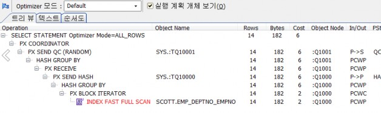
GROUP BY deptno;
Show parameter cpu_count
Pb 28. 이름에 EN또는 IN을 포함하고 있는 사원들의 이름, 월급, 직업을 출력
SELECT ename,sal,job FROM EMP
WHERE ename LIKE '%EN%' OR ename LIKE '%IN%' ;
Pb 29. 위에꺼 튜닝
SELECT /*+ index_desc(emp emp_ename) */ename,sal,job FROM EMP
WHERE ename LIKE '%EN%' OR ename LIKE '%IN%' or ename> ' ';
SELECT /*+ index_ffs(emp emp_ename) */ rowid FROM EMP
WHERE ename LIKE '%EN%' OR ename LIKE '%IN%';
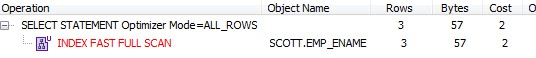
위에서 구한 rowid 3건을 가지고 해당 rowid의 테이블의 이름, 월급, 직업을 출력
SELECT ename,sal,job FROM EMP
WHERE ROWID IN (
SELECT /*+ index_ffs(emp emp_ename) */ rowid FROM EMP
WHERE ename LIKE '%EN%' OR ename LIKE '%IN%');
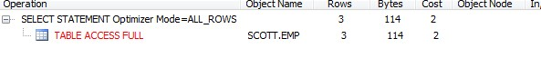
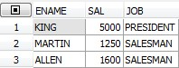
SELECT /*+ leading (e3 e1) use_nl(e1) rowid(e1)*/ e1.ename, e1.sal, e1.job
FROM EMP e1,
(SELECT /*+ index_ffs(e2 emp_ename) no_merge*/ ROWID rr FROM EMP e2
WHERE ename LIKE '%EN%' OR ename LIKE '%IN%')e3 WHERE E1.ROWID = e3.rr;
Pb 30. 이름에 EN또는 IN을 포함하고 있는 사원들의 이름, 월급, 직업을 출력하는데 정규식을 사용해서 출력하면 성능이 더 좋아지는지 확인 해보시오
SELECT ename,sal,job FROM EMP
WHERE regexp_like(ename,'(EN|IN)');
Where 에 조건이 여러개가 있고 그 조건에 사용되는 컬럼이 다 단일컬럼 인덱스로 구성되어 있을때 하나의 인덱스를 사용하는게 아니라 여러개의 인덱스를 동시에
사용해서 시너지 효과를 보는 스캔방법.
Pb 31. demobld.sql을 돌리고 직업이 salesman 이고 부서번호가 30번인 사원들의 이름과 월급과 직업, 부서번호를 출력하시오
SELECT ename,sal,job,deptno FROM EMP
WHERE job='SALESMAN' AND DEPTNO=30;
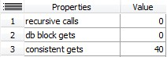
Pb 32. 직업과 부서번호에 각각 단일 컬럼 인덱스를 생성하고 문제 31번 쿼리의 실행계획을 보면 직업과 부서번호 2개중에 어느 컬럼에 인덱스를 엑세스 하겠는가?
Mostaly job
Pb 33. 그렇다면 왜 deptno에 인덱스를 타지 않고 job의 인덱스를 탔을까?
Job 이 6개라서 deptno 4 라서? I don't agree a bit.
Pb 34. 그러면 emp_dept 인덱스를 엑세스 하겠금 힌트를 주고 실행 SELECT /*+ index(emp000 emp_deptno)*/ename,sal,job,deptno FROM EMP
WHERE job='SALESMAN' AND DEPTNO=30;
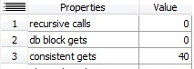
Pb 35. 아래의 SQL이 index merge scan 이 될수 있도록 힌트를 주시오
Select /*+ and_equal (emp emp_job emp_deptno) */ ename, sal, job, deptno from emp
Where job='SALESMAN' and deptno=30;
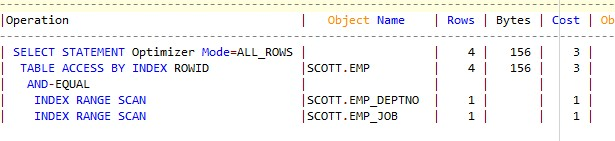
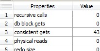
Index bitmap merge( combination)
Index merge scan 의 진화된 기술로 여러개의 인덱스를 각각 bitmap으로 변환해서 하나로 합쳐서 구한 rowid로 테이블을 엑세스 하는 스캔방법.
Insert 절의 컬럼이 모두 인덱스에 등록되어 있지 않아도 됨
너무 많은 인덱스를 조합하면 오히려 성능이 떨어질수 있으니 주의
SELECT /*+ index_combin(emp) */ ename,sal,job,deptno
FROM EMP
WHERE job='SALESMAN' AND deptno=30;
//위와 같이 지정하게 되면 테이블내의 모든 인덱스를 조합한다
Pb 36. 우리반 테이블에 전공과 통신사에 각각 단일 컬럼 인덱스를 걸고 전공이 경제학이고 통신사가 SK인 학생들의 이름과 전공과 통신사를 출력하는 쿼리의 실행계획이 index bitmap merge scan이 되도록 하시오
SELECT /*+ index_combin(emp2) */ename,major,telecom FROM EMP2
WHERE major='경제학' AND telecom='sk'
테이블을 엑세스 하지 않으면서 인덱스만 가지고 조인을 해서 결과를 보여주는 스캔방법
Where 절과 insert 절에 컬럼이 모두 인덱스에 등록되어 있어야함
---> 조회하는 범위가 많지 않으면서 인덱스 안에있는것만 조합하여 조회할때
Select empno, ename From emp
Where empno=7788;
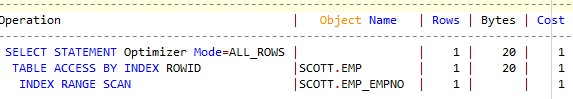
Pb 37. 아래의 SQL을 index join 엑세스 방법으로 힌트를 줘서 테이블 엑세스를 하지 말게 하시오
Select /*+ index_join(emp)*/ empno, ename From emp
Where empno=7788;
안됨
Pb 38. empno와 ename에 각각 not null 제약을 걸고 실행계획을 확인하시오
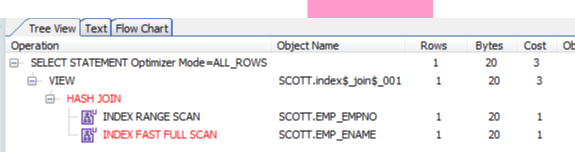
Select /*+ index_join(emp emp_empno emp_ename)*/ empno, ename From emp
Where empno=7788 AND empno IS NOT NULL AND ename IS NOT NULL;
Pb 39. 전공이 통계학이고 나이가 20대인 학생의 학생번호, 이름과 전공과 나이를 출력하는 쿼리를 작성하는데 쿼리의 성능이 높아지도록 적절하게 인덱스를 생성하고
인덱스를 잘 탈 수 있도록 힌트를 사용해서 SQL을 작성하시오
여러칼럼 인덱스 걸어도됨
Create index emp2_indx2 on emp2(major,age,empno, ename);
Consisent block 줄이는 방법 (별 도움안됨)
SELECT e.empno,e.EMAIL FROM EMP2 e
WHERE e.major='통계학'
AND e.age LIKE '2%';
Pb 40. 아래의 sql을 튜닝하시오
CREATE INDEX emp2_ename ON emp2(ename);
SELECT ename,age,major FROM EMP2
WHERE SUBSTR(ename,1,1)='김';
---------------------------------------------------------
SELECT ename,age,major FROM EMP2
WHERE ename LIKE '김%';
Pb 41. 아래의 SQL을 튜닝 SELECT ename,age,major FROM EMP2
WHERE TO_CHAR(birth,'RR/MM/DD') ='92/05/25';
----------------------------------------------------------------------------
SELECT ename,age,major FROM EMP2
WHERE birth =TO_DATE('1992/05/25','RRRR/MM/DD');
Index combine 과 index join의 차이점
INDEX COMBINE은 SELECT 절의 컬럼과 WHERE 절의 컬럼이 모두 INDEX 에 존재하지 않아도됨
INDEX_JOIN의 경우가 속도면에서 조금더 유리함